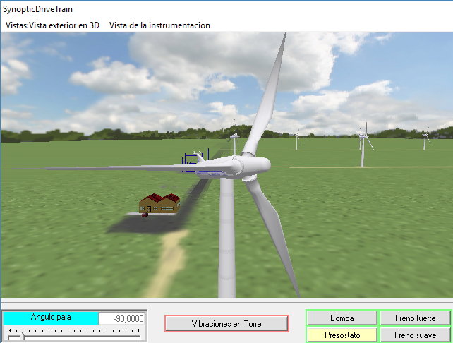
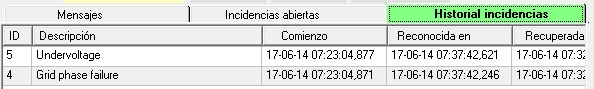

Objective: Identify the wind speed conditions that allow generation to start.
What to observe: Wind speed, system status, and transition from shutdown to operation.
What to note: Approximate wind speed at the moment of start-up and subsequent evolution.
💡 Observe whether there is hysteresis between shutdown and start-up.
The objective of this practical is to familiarize the student
• with the different synoptics available.
• with the creation of the necessary conditions for the wind turbine to start production.
1. Ensure that the simulation is running: in the "Running Simulator..." synoptic, press "Run."
2. Note that the pitch angle changes to -90º. You can check this in the Power Train synoptic.



3. Check in the "Electrical Cabinet..." synoptic that the "Main Switch" is connected. See the following figure:


Fig. Detail of the "Main Switch."
4. On the "Control Terminal" screen, check that there are no incidents that need to be acknowledged in the "Open incidents" tab (except for "Manual STOP").
For example, if you have 'run' the simulation and the "Main Switch" was not connected, the Controller will detect the lack of main power supply and report incidents such as those shown in the following figure, noting the date on which they were detected (year-month-day hour:minute:second,millisecond):
If you switch the "Main Switch" to 'On', the Controller will detect that the conditions that caused the incidents have disappeared and will note the time at which this occurs in the column titled "Recovered." See the following figure.
These types of incidents need to be 'acknowledged' by the operator: to do this, they must check (with the mouse) the box in the "OK" column for each one (first two items in the figure above). When you do so, you will see that they disappear from the "Pending Incidents" list and are automatically moved to the "Incident History" tab, as shown in the following figure:

5. In this situation, the list in 'Open Incidents' should only show "Manual STOP," as in the following figure:
The Controller is in a position to receive the "START" command. In this particular type of Controller, the (manual) command from the Control Terminal must be preceded by the operator's 'approval', for which the box corresponding to the "Manual STOP" line in the above list must be checked. See the following figure.
Note that the 'acknowledgment' of this incident is not reflected in the 'Incident History'.
From this moment on, the Controller is available to receive the 'manual' "START" command.
If you press the "START" button, the wind turbine's performance will depend on the wind speed. Before pressing it:
6. Make sure that you have a "Recorder" visible where the "Predefined Panel" with the name "Cutin + Cutout + Production" is displayed, as shown in the following figure. See How to display a Recorder and choose a predefined Panel in it.
7. Change the wind speed to 6.0 m/s. This is a low wind value: the simulated wind turbine generates a nominal power of 1,300 KW at a nominal wind speed of around 12 m/s. A wind speed of 6 m/s is below the "Max. for Large Generator" wind speed (see Functional Wind Values), so we know that the 6-pole connection of the Generator (Small Generator) will be used.
To do this, locate the "SynopticWindNacelle" synoptic (see How to bring a specific synoptic to the foreground).
In this synoptic, place the mouse over the wind indicator (white background). See the following figure.
You can change the wind in two ways:
1. By typing the desired value directly.
Note that when you change the value, the background turns yellow until you press the "Enter" key on the keyboard. If you want to abort the change, before pressing "Enter," you can press the "ESC" key (top left of the keyboard).
2. Using the "Page Up," "Page Down," "Up Arrow," and "Down Arrow" keys.
This method is preferred and allows you to change the value in increments of 1 m/s (Page Up/Page Down) or in increments of 0.1 m/s (Arrows).
This is the preferred method because it limits the wind speed change to reasonable values, whereas in method 1, these changes can be very abrupt.
8.You can take advantage of this to change the wind direction, using the same procedure on the "Wind Direction" indicator.
9.Press the "START" button and observe the evolution of the following signals on the recorder and on the different synoptics.
1.Blade rotation speed: in SynopticDriveTrain, Control Terminal, and Recorder.
2. Generator shaft rotation speed: in Control Terminal and Recorder.
3. Nacelle orientation: in SynopticWindNacelle and Recorder.
4. Hydraulic circuit pressure, pump operation, and brake release: in SynopticDriveTrain and Recorder
5. Pitch angle: in SynopticDriveTrain (both in 'Internal view' and '3D view'), in Control Terminal, in SynopticWindNacelle, and in the Logger.
6. Wind speed: in SynopticWindNacelle, in Control Terminal and Recorder.
7. Thyristor bypass contactor status (connection to the grid): in Electrical Cabinet (internal view), in Control Terminal and Logger.
10.You will obtain a signal evolution in the recorder similar to that shown in the following figure:
11.You can see that, after a certain amount of time (a few seconds) after pressing START, the Controller activates the orientation motors ("Left Turn" and "Right Turn") until the orientation of the Nacelle 'appreciably' matches the indicated wind direction, but not exactly. This is because the controller assumes that there is a certain degree of uncertainty in the measurement of the wind direction and that, on the other hand, moving the nacelle 'requires' energy and therefore has a cost. The result is that if the error between the 'measured' wind direction and the orientation of the nacelle is within a certain margin, it 'decides' that it is oriented.
The value of this margin in the simulator is exaggerated for educational purposes.
Likewise, the rotation speed of the nacelle in the simulator is not realistic, although this is a value that can be changed, even during the execution of the simulation, using the parameters NacelleYawing.CWYawingSpeed and NacelleYawing.CCWYawingSpeed. The default value is 10 degrees/second, while in reality this value is around 0.5 degrees/second.
12.The concept of "Effective Wind Speed."
This value corresponds to the value of the wind that is frontal to the plane of rotation of the blades, that is, the wind that effectively serves to rotate the blades.
If the wind turbine is not oriented, this value corresponds to the product of the actual wind speed multiplied by the cosine of the misalignment angle. It corresponds to the red vector in the following figure.
This effective value is shown in the "VeloEficVien" indicator on the "Terminal Control" synoptic. When the nacelle is oriented, this value coincides with the wind speed value. This can be verified by the evolution of both values in the recorder figure, in the last channel, where they converge to the same value when the nacelle is oriented.
13. Functional analysis of the sequence of events during the grid connection operation (cutin):
1. If the nacelle is not oriented towards the wind, the orientation operation begins. It may be necessary to first perform a power cable unwinding operation.
2. Based on the wind measurement, the controller decides that the generator, which has two possible connections (corresponding to stator windings with 4 or 6 magnetic poles, "Large Gen." and "Small Gen." respectively), will be connected with 6 poles ("Small Gen."). In this case, the synchronous speed is 1,000 rpm.
3. Before starting the actual operation, the controller decides to check the condition of the brake mechanism (condition of the brake shoe, spring, etc.). To do this, it activates the brake, while setting the pitch of the blades to a value at which it knows that the wind produces sufficient mechanical torque on the blades for this check.
4. If everything is OK, it proceeds to release the brakes: to do this, it closes the hydraulic circuit valve and starts the pump.
5. The power train begins to accelerate.
6. The controller monitors the acceleration value of the power train and acts on the pitch (which is the source of acceleration) so that this value remains below a certain level.
7. When the generator speed approaches the synchronous speed, the controller activates the thyristors. The thyristor conduction angle follows a pattern of starting with a small conduction angle and reaching full conduction after a few seconds (typically 2 to 4 seconds).
See the animation in Soft starter (soft connection) to the grid.
8. When the thyristors are fully conducting, the controller activates the thyristor bypass contactors, which short-circuit them: in this situation, no current flows through the thyristors and they are deactivated. The wind turbine is in production.